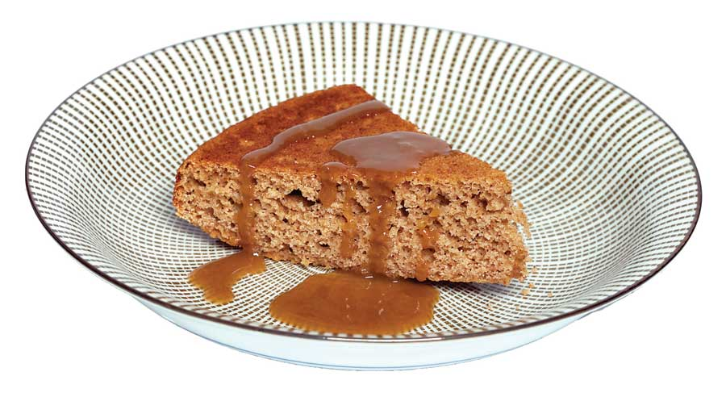

Ingredients:
1/2 cup cornmeal
2/3 cup unbleached all-purpose flour
1/2 tsp salt
3/4 cup sugar
2 tsp baking powder
1 tsp ground cinnamon
1/4 tsp ground allspice
1/4 tsp ground nutmeg
1/4 tsp ground cloves
2 eggs
1/2 cup applesauce
1/3 cup unsweetened apple juice
Instructions:
Preheat oven to 350 degrees Fahrenheit. Grease a 9-inch round cake pan. Sift together the cornmeal, flour, salt, sugar, baking powder and spices. Set aside.
Whisk together the eggs, applesauce and juice. Fold in the dry ingredients until completely combined. Pour into the greased cake pan. Bake 25 to 30 minutes, or until a toothpick comes out clean. Allow to cool 10 minutes in the pan. Turn out onto a cake plate to cool completely. Serve with warm brown sugar sauce. Serves 8.
BROWN SUGAR SAUCE
Ingredients:
1/2 cup butter
1/2 cup evaporated milk
1 cup brown sugar, tightly packed
Apple brandy (optional)
Instructions:
Combine the first three ingredients in a saucepan over medium heat. Stir until completely melted and combined. Remove from heat. If desired, stir in a shot of apple brandy before serving over the apple cornmeal cake.
|
 EMILY HELLER Applesauce can be used to replace liquid fats (but not softened butter) in almost any baked good. Simply replace the melted butter or oil with an equal amount of applesauce. |
|
|